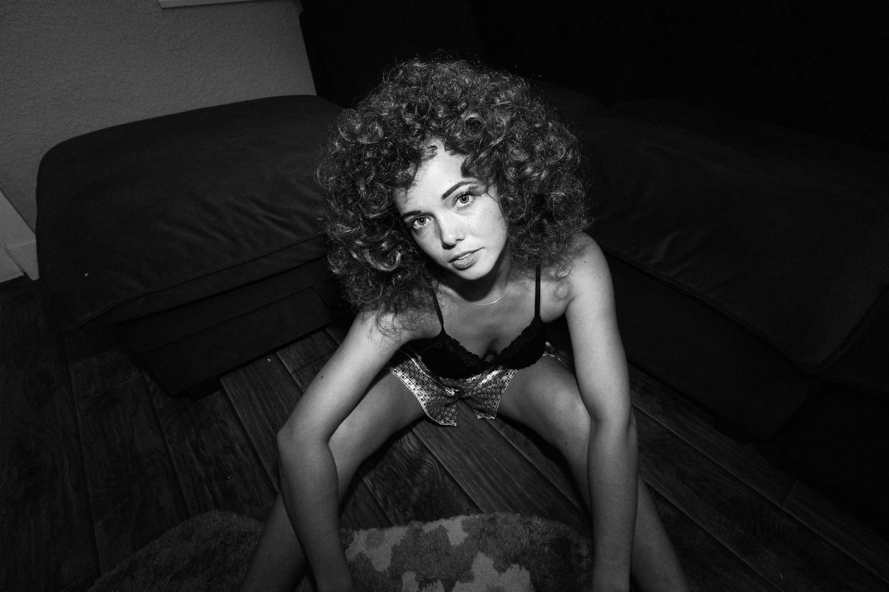
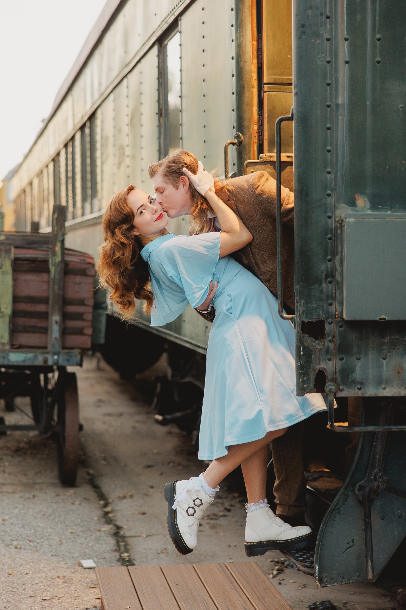
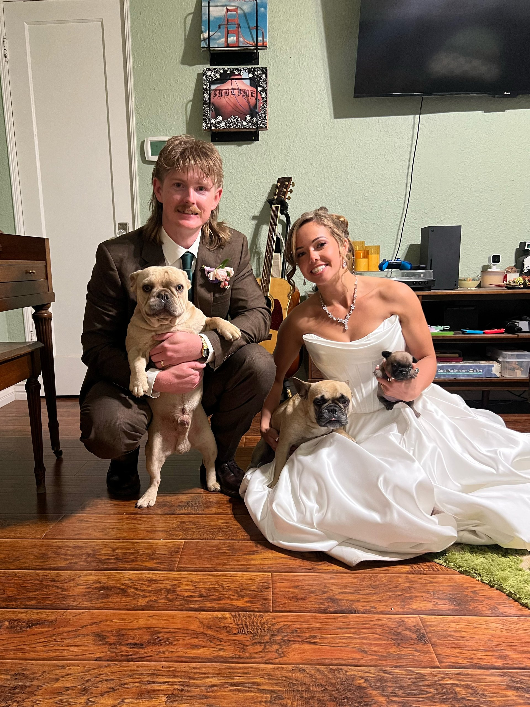

.jpeg)

A little about me
Just your friendly neighborhood creative with a camera.
I’m Jade, a Southern California photographer with a love for images that feel warm, emotional, creative, and a little bit nostalgic. I’m drawn to the in-between moments, the quiet details, the real laughs, and the kind of photos that feel like a memory instead of a pose.
Outside of photography, my life is full of music, design, my partner, and our three dogs. I love anything that feels creative, personal, sentimental, or slightly offbeat, and I bring that same energy into the way I photograph people.
I care about making people feel comfortable. I know being in front of a camera can feel awkward at first, so my goal is to make the whole experience feel more like hanging out with a friend who just happens to know how to find the good light.
Things I love
My favorite person
Life is better with my partner by my side.
I’m married to my best friend, and that part of my life has shaped the way I see love, connection, and the importance of preserving the little things. The quiet moments at home, the inside jokes, the everyday routines, the photos you almost forget to take, those are the things that become priceless later.
That’s a huge part of why I photograph the way I do. I’m not just looking for perfect images. I’m looking for the feeling behind them.


The chaos crew
Also, yes, there are three dogs.
My dogs are a huge part of my world. They keep life funny, sweet, chaotic, and full of personality, which honestly feels a lot like the kind of energy I love capturing in photos.
I’m always looking for the moments that feel the most alive, whether that’s a wedding day, a portrait session, or a blurry little slice of real life happening right in front of us.
Photos should feel like proof that the moment mattered.
My work is rooted in emotion, comfort, creativity, and connection. I want you to look at your photos years from now and remember not just how everything looked, but how it felt to be there.
did we just become best friends?